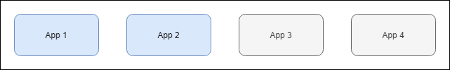
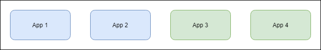
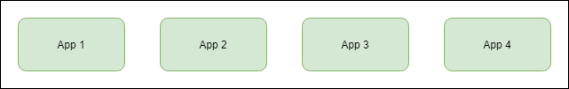

Approaching Zero
Minimizing Downtime During Deployments
Kevin Feasel (@feaselkl)https://csmore.info/on/zdt
Who Am I? What Am I Doing Here?


Motivation
The goal of this talk is to minimize downtime due to application deployments. Ideally, we would want to get this down to zero: users experience zero downtime when the app upgrades.
In reality, that is impossible. We instead settle for approaching zero.
Agenda
- Our Enemy the Downtime
- The Flow
- Making Life Simpler
- Stored Procedure Changes
- Table Changes
- Index Changes
- Constraint Changes
- Identity Changes
- A Case Study
Know Your Enemy: Downtime
If your website has office hours, downtime is no problem: you deploy during off hours occasionally.
Most websites aren't like that anymore. Instead, users expect 24/7 uptime. For deployments, users can accept occasional degraded experiences (especially around performance) but otherwise want to get on with their lives. We need an approach to keep them happy while pushing out code changes at a reasonable time.
Know Your Enemy: Downtime
Downtime is any time users are unable to access the resources they need in your product.
Reasons for downtime:
- Hardware failures
- Application down due to deployment
- Network / routing issues
- Locks on resources
- Persistent timeouts due to performance issues
Why I Don't Believe in Zero Downtime
Table locks are downtime. Thought experiment: drop and rebuild the clustered columnstore index on a fact table and see if anyone complains.
Many operations take locks for short amounts of time. With luck, nobody will notice these locks, but there are small batches of potential downtime here. Users tend to be forgiving regarding these--it's easy enough to say "the network must be slow today"!
The Benefits of Minimizing Downtime
Users can get their work done with fewer interruptions.
Developers can deploy smaller changes faster, giving end users fixes and improvements sooner.
Administrators can deploy when people are in the office and available.
Agenda
- Our Enemy the Downtime
- The Flow
- Making Life Simpler
- Stored Procedure Changes
- Table Changes
- Index Changes
- Constraint Changes
- Identity Changes
- A Case Study
The Flow
Our flow will be a modified blue-green deployment method. We will have the following phases:
- Database Pre-Release
- Database Release
- Application Release
- Database Post-Release
Database Pre-Release
Pre-release starts whenever you are ready for it. Good things to do during pre-release are:
- Scheduling things that will take a long time.
- Making changes which need to happen before the rest of the process.
- Phase 1 of a multi-step process.
Users should not notice that you are in database pre-release.
Database Release
Database release often starts on a fixed schedule but can run several times a day. We might see a degradation of services here.
During this phase, we push the majority of database changes. Our database changes need to support the application release model.
Application Release Model
We will use the blue-green deployment model today. We will show without loss of generality the variant in which the number of application servers is fixed.
Before the Release

We have "old" code running on all servers.
Servers Down
We still have "old" code running on servers but some have gone down, leading to a potentially degraded experience.
New Code
During this phase, we have old and new application code. We need to support both at the same time.
More Servers Down

We have only new code but a potentially degraded experience.
All Servers Up
Servers are back to normal, running new code.
Database Post-Release
During this phase, we get to destroy stuff, removing unused columns, dropping obsolete procedures or tables, deleting old data, etc.
Database post-release can go on as long as needed and customers should not notice a thing.
Agenda
- Our Enemy the Downtime
- The Flow
- Making Life Simpler
- Stored Procedure Changes
- Table Changes
- Index Changes
- Constraint Changes
- Identity Changes
- A Case Study
Key Assumptions
- You have code in source control
- You have an automated release process
- You have a continuous integration pipeline
Source Control
Source control is not mandatory but it is really helpful. Source control is a safety net and allows you to revert code quickly in event of failure.
Git is the most popular source control system, but use whatever you want.
Automated Release Process
That you have something is more important than the tool itself. Use Azure DevOps, Octopus Deploy, Jenkins, a hand-built solution, or whatever works.
Automated release processes ensure all scripts go and that each release is consistent. Humans make a lot of replication mistakes; let computers do that work.
Continuous Integration Pipeline
With an automated release process, keep deploying to lower environments--you want as many tests of your deployment scripts as possible. That way you won't have any nasty downtime-related surprises going to production, or errors if you need to re-run scripts.
Simplification Measures
In addition to the key assumptions, we have a few tools for making life easier.
- Use Enterprise Edition
- Use Read Committed Snapshot Isolation
- Use Stored Procedures
- Use Database Tests
Use Enterprise Edition
Enterprise Edition allows you to do things you cannot do in Standard Edition, such as rebuilding indexes online and partitioning tables. These can make deployments easier.
Use RCSI
Read Committed Snapshot Isolation limits the amount of blocking on tables. If you can turn it on, do so. This will let you write to tables without blocking readers. Note that writers can still block writers with RCSI.
RCSI does increase tempdb usage, sometimes considerably. Keep that in mind if you haven't turned it on yet.
Use Stored Procedures
Stored procedures act as an interface between your application code and your database objects. Stored procedures let us provide a consistent interface, letting us refactor database code and objects without the application knowing or caring.
Stored procedures also let you explicitly see backward compatibility: you can (usually) know which of ProcedureV4 and ProcedureV3 is newer.
Use Database Tests
Database tests give you an extra dose of confidence that your refactoring will not break existing code. This lets you experiment more without additional risk.
tSQLt is the most popular database test library out there, but it could be as simple as a series of NUnit tests which make stored procedure calls.
Agenda
- Our Enemy the Downtime
- The Flow
- Making Life Simpler
- Stored Procedure Changes
- Table Changes
- Index Changes
- Constraint Changes
- Identity Changes
- A Case Study
Stored Procedure Changes
Scenarios covered:
- New stored procedure
- Add new column to procedure
- Remove column from procedure
- Change input parameter
- Change input parameter -- table type
- Refactoring a procedure
Demo Time
Stored Procedure Recap
What follows are the phase and process for each scenario we have covered. These are here for your reference.
Agenda
- Our Enemy the Downtime
- The Flow
- Making Life Simpler
- Stored Procedure Changes
- Table Changes
- Index Changes
- Constraint Changes
- Identity Changes
- A Case Study
Table Changes
Scenarios covered:
- Add a nullable column
- Add a non-nullable column with a default constraint
- Backfill a new column
- Remove a column
- Remove a column with a constraint
- Extend VARCHAR column
- Shrink VARCHAR column
- Rename a table
Demo Time
Table Recap
What follows are the phase and process for each scenario we have covered. These are here for your reference.
Agenda
- Our Enemy the Downtime
- The Flow
- Making Life Simpler
- Stored Procedure Changes
- Table Changes
- Index Changes
- Constraint Changes
- Identity Changes
- A Case Study
Index Changes
Scenarios covered:
- Add a non-clustered index
- Drop a non-clustered index
- Create a clustered index
- Change a clustered index which is not the primary key
- Separate out a combination primary key and clustered index
Demo Time
Index Recap
What follows are the phase and process for each scenario we have covered. These are here for your reference.
Agenda
- Our Enemy the Downtime
- The Flow
- Making Life Simpler
- Stored Procedure Changes
- Table Changes
- Index Changes
- Constraint Changes
- Identity Changes
- A Case Study
Constraint Changes
Scenarios covered:
- Add a default constraint
- Change a default constraint
- Add a unique key constraint
- Add other constraints
Demo Time
Constraints Recap
What follows are the phase and process for each scenario we have covered. These are here for your reference.
Agenda
- Our Enemy the Downtime
- The Flow
- Making Life Simpler
- Stored Procedure Changes
- Table Changes
- Index Changes
- Constraint Changes
- Identity Changes
- A Case Study
Identity Changes
Scenarios covered:
- Add an identity column to an existing table
- Reseed an identity column
- Change the data type of an identity column
Demo Time
Identity Recap
What follows are the phase and process for each scenario we have covered. These are here for your reference.
Agenda
- Our Enemy the Downtime
- The Flow
- Making Life Simpler
- Stored Procedure Changes
- Table Changes
- Index Changes
- Constraint Changes
- Identity Changes
- A Case Study
A Case Study
As a Database Engineer, I was responsible for approximately 200 tables and 800 stored procedures.
Most of these tables had a column called ClientID as part of the primary key. The only problem? It needs to be called ProfileID. Which means updating 150+ tables and 700+ stored procedures. Without extended downtime.
The Scope
- Rename
ClientIDtoProfileIDon 150 tables, including constraint and index names. - Drop 150 unused procedures and 20 unused tables.
- Rename
ClientIDtoProfileIDon 550+ procedures. And refactor while we're in there. - Update SSIS packages to use
ProfileIDinstead ofClientID. - Convert ad hoc queries in code to stored procedures and make them use
ProfileID.
Pre-Pre-Release (Phase 1)
- Begin reformatting and refactoring procedures.
- Look for unused procedures. Search in plan and procedure cache, code base, SQL Agent jobs, SSIS packages, metadata tables, etc. Eliminate broken objects.
- Create lots and lots of database tests.
Pre-Release Phase
- Add
ProfileIDas nullable INT on each table withClientID.
Database Release (Phase 2a)
- Release temporary procedures which take
@ClientIDand@ProfileIDas parameters. - Scoop out logic from app-level procedures and put into temp procedures. Run
ISNULL(@ProfileID, @ClientID)checks on these. - Turn app-level procedures into shells which call temp procedures.
Database Release (Phase 2b)
Change references in views and functions to return ISNULL(ProfileID, ClientID) instead of ClientID.
Database Release (Phase 2c)
Update non-application SQL code to run ISNULL(ProfileID, ClientID) checks. This includes:
- SQL Agent jobs
- Triggers
- Non-application stored procedures
- SSIS packages
- Other processes

Database Release (Phase 3)
Swap ProfileID and ClientID:
- Rename
ProfileIDtoProfileID2 - Rename
ClientIDtoProfileID - Add new
ClientIDnullable integer - Drop
ProfileID2
Then rename all constraints and indexes using sp_rename.

Database Post-Release (Phase 4)
Deploy final versions of "temp" application code procedures: replace @ClientID with @ProfileID in app procedures and change ISNULL(ProfileID, ClientID) to ProfileID.
Return ProfileID column on procedures as well as ProfileID AS ClientID.

Database Post-Release (Phase 5)
Update non-application SQL code to change ISNULL(ProfileID, ClientID) to ProfileID.

Database Post-Release (Phase 6)
Update views and functions to change ISNULL(ProfileID, ClientID) checks to ProfileID.
Include ProfileID and ProfileID AS ClientID columns in result sets.
Database Post-Release (Phase 7)
- Drop the empty ClientID column on each table.
- Deprecate obsolete objects.
Post- Database Post-Release (Phase 8)
Update application code over time to call new procedures instead of old code-facing procedures and change ClientID code references to ProfileID. Deprecate old procedures over time.
Wrapping Up
"Zero" downtime database deployments aren't for every company. If you have the ability to take downtime windows, your deployments are significantly easier.
Still, if you do need these tools, it is good to know what you can safely do without blocking your customers.
Wrapping Up
To learn more, go here:
https://csmore.info/on/zdt
And for help, contact me:
feasel@catallaxyservices.com | @feaselkl
Catallaxy Services consulting:
https://CSmore.info/on/contact